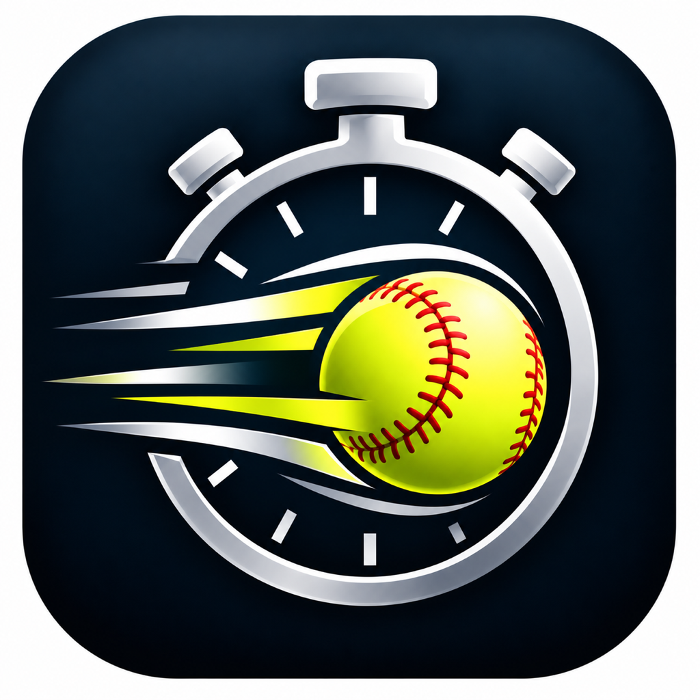

Measure a throw-down from video, then export the clip with the pop and exchange labels on it.
Pop Timer reads videos you choose from Photos so you can mark exchange and pop times. Those videos stay on your iPhone. Pop Timer does not create an account, and it does not send those videos to a server.